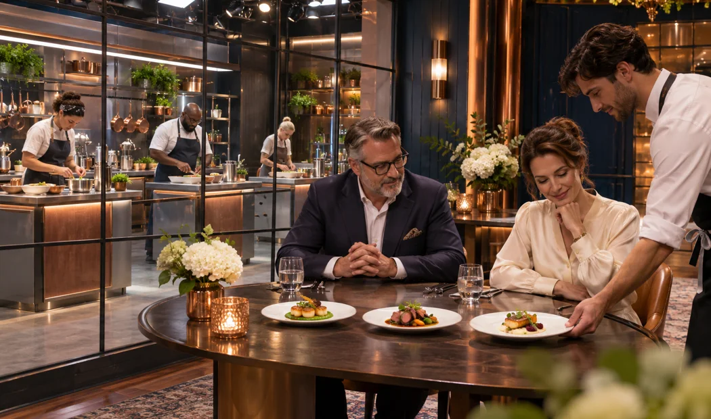
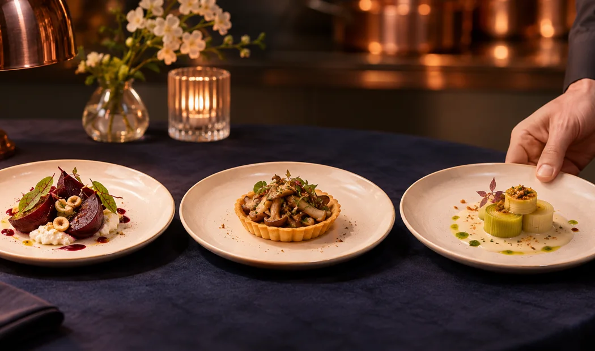

B.M. CREATIONS · TELEVISION FORMAT
Guess Who’s Cooking?
Three cooks. One celebrity couple. Nobody at the table knows who cooked what.

Original television entertainment format
Created by Brian Mountford
B.M. CREATIONS · TELEVISION FORMAT
Two reveals and a blind tasting
Viewers start by guessing the celebrity couple from clues. At the table, the couple sees only menus A, B and C. Viewers know who cooked each menu and follow the scores as the lead changes.
The professional
A working chef brings restaurant technique.
The home cook
An experienced amateur brings favourite dishes and a menu of their own.
The beginner
A first-time cook has a chance to win on taste alone.
Proposed regular line-up for the pilot.
B.M. CREATIONS · TELEVISION FORMAT
How an episode plays
1. Guess the diners
Clues invite viewers to guess the celebrity couple before the on-screen reveal.
2. Meet the cooks
Three contestants name and cook their own three-course menus. Each has the same budget for ingredients and a bottle of wine to go with the main. The original proposal suggests £50.
3. Serve the courses blind
A waiter serves A, B and C in tasting portions, one course at a time. The couple scores each course and the wine choices.
4. Reveal the winner
The scoreboard updates after each course. The couple meets the winning cook after the final scores.
B.M. CREATIONS · TELEVISION FORMAT
What viewers see at the table

Sample scoreboard
| Menu | Cook | Starter | Main | Wine | Total |
|---|
| A | Chef | 8 | 7 | 3 | 18 |
| B | Home cook | 7 | 9 | 4 | 20 |
| C | Beginner | 9 | 8 | 2 | 19 |
Proposed scoring. Up to 10 for each course and 5 for wine. Dessert can still change the lead.
B.M. CREATIONS · TELEVISION FORMAT
A series built around the table
Proposed commission
Six 30-minute episodes. Five heats feature different celebrity couples and three new cooks per heat.
A shared final
The five heat winners return. One couple tastes their menus blind under the same rules and awards the series trophy.
Two studio spaces
Three workstations and a separate dining room conceal the cooks’ identities. The waiter carries the action between them.
On screen
Close-ups catch the food and the diners’ reactions. A, B and C graphics link each menu to its cook for viewers at home.
B.M. CREATIONS · TELEVISION FORMAT
The pilot
Can the couple’s favourite dish come from the cook with the least experience?
Cast for contrast
One professional, one home cook and one beginner. A celebrity couple who can banter and agree on a score.
Test the service
Run a complete blind tasting with the clues, scoreboard and winner reveal.
Set the rules
Confirm the budget, scores, tie-break and wine option. Time the tasting rounds before committing to a slot.
Brian Mountford · Creator
brianmountford@btinternet.com